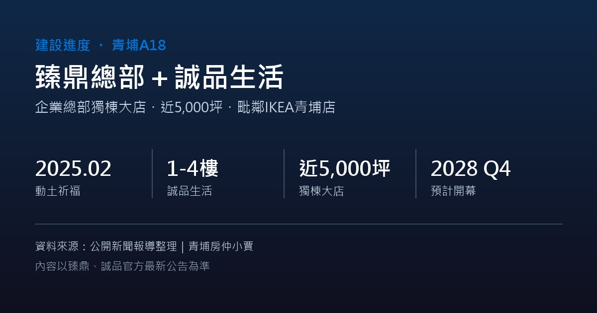

封面照片：青埔高鐵特區一景，可見 IKEA 桃園青埔店周邊（2020 年 10 月拍攝，並非本案基地現況）｜Tzuhsun Hsu｜CC BY-SA 2.0（Wikimedia Commons）
臻鼎總部＋誠品生活動土，近5,000坪獨棟大店拚2028年底開幕
作者 周家篁 最後更新： 資料整理：統計至 2026 年 10 月公開報導
全球 PCB 印刷電路板龍頭臻鼎科技集團，攜手誠品生活在青埔 A18 高鐵站前打造企業總部，並由誠品經營近 5,000 坪的獨棟大型商場，基地毗鄰 IKEA 青埔店。「臻鼎時代大廈」已於 2025 年 2 月底舉行動土祈福典禮，桃園市長出席見證，目標 2028 年底開幕。

這座大樓由國際建築事務所 Gensler 操刀設計，誠品生活則找來設計師蕭博文統籌室內與場域規劃，首度把書店設置在商場 1 樓，戶外並設有大型廣場。臻鼎集團董事長沈慶芳曾公開表示，為了誠品，集團把大樓 1 至 4 樓都留給誠品使用，剩餘樓層才規劃為企業總部辦公空間。
對青埔而言，這是繼華泰名品城、Xpark 之後，區域內少見的大型複合商業指標案，誠品的進駐也被視為補強青埔「文化、生活機能」的重要一塊。截至目前公開報導，尚未有更新的工程進度百分比或實際動工時間表，建議持續關注臻鼎與誠品官方公告。
本文整理自公開新聞報導，實際工程進度、招商內容與開幕時程以臻鼎集團、誠品生活官方最新公告為準，本文不構成任何投資或購屋建議。